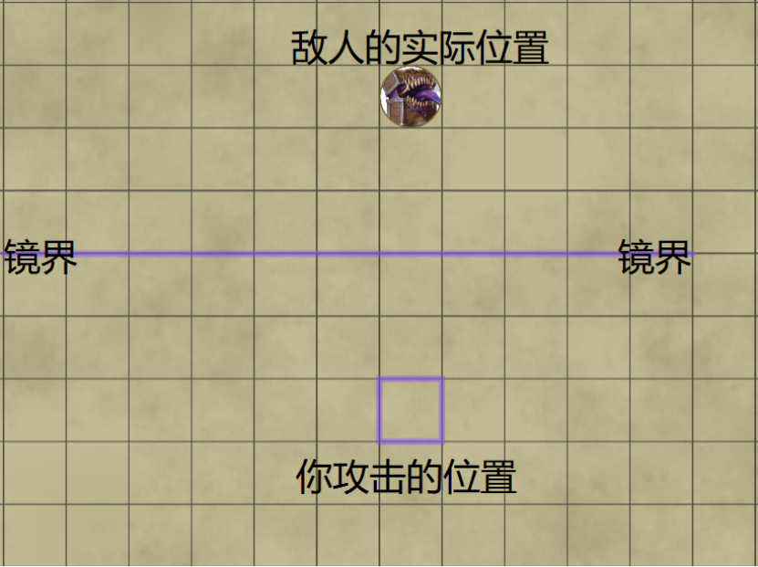

老年化Aging
四环 死灵
施法时间：1动作
施法距离：90尺
法术目标：若干你能看见的生物
法术成分：V、S、M（一块儿童手表）
持续时间：专注，至多1小时
指定施法距离内一点，你在该点附近半径10尺内选择最多两个你能看见的生物。这些生物需要进行一次体质豁免，豁免失败则在法术的持续时间内陷入衰老状态，它们受到的幼年化状态也会被暂时压制。
升环施法效应：使用五环或更高环阶的法术位施展此法术时，你使用的法术位每比四环高一环，便可以在法术源点附近半径10尺内额外选择一个你能看见的生物作为法术目标。
爱丽丝的摇篮Alice in Cradle
四环 幻术
施法时间：1动作
施法距离：90尺
法术目标：一个你能看见的生物
法术成分：V、S、M（一个金发蓝裙的洋娃娃）
持续时间：专注，至多1分钟
在法术的持续时间内，你创造出一只梦幻般的摇篮，悬浮于施法距离内一个你能看见的生物附近，并随目标而移动。
每当目标开始自己的回合时，摇篮会晃动它的身体，并唱出催眠的音乐。目标听到音乐后，需要进行一次感知豁免，豁免失败则陷入持续1d4小时的睡眠。
“解除法术”或类似效应，可以解除这只梦幻般的摇篮，而无法解除受术者的睡眠状态。
活化箭矢Animated Arrow
四环 变化
施法时间：1反应
施法距离：90尺
法术目标：一个弹药袋
法术成分：V、S
持续时间：专注，至多1分钟
当你看见一个生物从弹药袋中取出箭支、弩矢、子弹等弹药，作为发动远程武器攻击的一部分时，你可以施展活化箭矢。
这个弹药袋中的最多20发弹药，能够被你操纵。你可以分别指定以这些弹药发动的远程武器攻击具有优势或劣势，也可以分别指定它们的最大射程和有效射程翻倍或减半。
水晶雕像Crystal statue
四环 变化
施法时间：1附赠动作
施法距离：30尺
法术目标：地面上一点
法术成分：V、S、M（至少价值100gp的微型水晶雕像，在施法时消耗）
持续时间：专注，至多10分钟
将一座微型的水晶雕像扔到施法距离内一处未被占据的地面上。在法术的持续时间内，雕像增长到了与你相同的尺寸，并开始复制你的部分行动。
水晶雕像AC13，生命值与你施法时的生命值相同，免疫毒素和心灵伤害。当你向某个方向移动时，你可以让雕像向同一方向移动，或是不让它一同移动；当你向某个方向发动攻击时，雕像也会向同一方向的相邻方格发动挥击。你还可以使用一个附赠动作，让雕像自行移动最多20尺。
水晶雕像的挥击：近战武器攻击，单一目标，触及5尺，命中等于你的法术攻击加值。若命中，造成4d6点心灵伤害。
//如下图所示，当灵能师向西侧的怪物1施展“能量射线”时，水晶雕像也向其西侧相邻方格的怪物2发动了挥击。若是灵能师向南侧的怪物3使用匕首攻击，则水晶雕像的挥击只能打到空气。若是灵能师向北侧的空气徒手打击，则水晶雕像会对其北侧相邻方格的怪物4发动挥击。

高等隐蔽膜Concealing Amorpha，Greater
四环 咒法
施法时间：1动作
施法距离：自身
法术目标：无
法术成分：V、S、M（一只透明气球）
持续时间：专注，至多10分钟
你在自己周围织就一层半实体薄膜，你所持有的任何物品都被薄膜包裹。薄膜起伏的表面提供重度遮蔽。
你自己不会受到薄膜的阻碍——你在此半透明、无定形的薄膜中仍然保持正常感官。当你需要进食、饮水、呼吸时，口鼻部位的薄膜会暂时移除。当你出汗、垂涎、排尿、月经时，分泌部位的薄膜会将秽物净化。
意识扫描Consciousness Sweep
四环 预言
施法时间：1附赠动作
施法距离：自身
法术目标：无
法术成分：V、S
持续时间：一轮
你以精神力对周围的空间进行扫描，获得可以看到实体物件内部或穿透它看到后方的穿透视觉，其半径为30尺，持续到你的下个回合开始。对你而言，此视觉范围内的实体均为透明状态，并且不会阻碍光线通过。一寸厚的金属，或是一层铅片，将阻碍此法术赋予的视觉。
升环施法效应：使用五环或更高环阶的法术位施展此法术时，你使用的法术位每比四环高一环，穿透视觉的半径就增加30尺。
任意门Dimension Door
四环 咒法
施法时间：1动作
施法距离：500尺
法术目标：空间内一点（传送目的地）、一个生物（共同传送）
法术成分：V
持续时间：立即
你将自己从当前位置传送至施法距离内的任意地点，并准确到达该目的地。法术的目的地可以是你能看见的、可想象的地点，也可以是通过距离和方向说明的地点，比如“径直向下 200 尺”，“西北向上 45 度 300 尺”。
进行传送时，你的随身物件不能超过你的负重。你还可以带上一个自愿的生物，且其体型不能比你大，而他的随身物件也不能超过其负重。该生物在你施法时必须在你5尺内。
如果你的目的地已经被生物或物件占据，则你以及任何与你一起传送的生物都将受到4d6点力场伤害，且法术传送失败。
升环施法效应：使用五环或更高环阶的法术位施展此法术时，你使用的法术位每比四环高一环，最大传送距离就增加250尺。
分配属性Distribution Abilities
四环 变化
施法时间：1动作
施法距离：60尺
法术目标：一个自愿生物
法术成分：V、S、M（一架至少价值300gp的精致天平）
持续时间：10分钟
指定施法距离内一个自愿生物，在法术的持续时间内，它从“力量、敏捷、智力、感知”四项属性中，选择两项属性各承受4点属性损伤；而另外两项属性各提高4点，不能超过28。
如果此法术带来的属性损伤，被免疫、压制、移除，那么此法术带来的属性提升也会失效。
能量墙Energy Wall
四环 塑能
施法时间：1动作
施法距离：120尺
法术目标：空间内一点
法术成分：V、S
持续时间：1分钟
施展此法术时，你从火焰、寒冷、闪电、雷鸣、强酸中选择一种伤害类型，创造出一面由选定能量组成的墙壁。你可以选择创造长不过60尺、高不过 20 尺、厚不过5尺的直线型能量墙；或是直径不过 20 尺、高不过 20 尺、厚不过5尺的环形能量墙。能量墙不透明，但可以被穿越，尽管穿越它需要冒着风险。
施展此法术时，位于与能量墙重叠区域的生物需要进行敏捷豁免。在区域内开始自己的回合，或是在某个回合内首次进入能量墙的生物，也需要进行敏捷豁免。豁免失败则受到4d6点伤害，豁免成功则伤害减半。施法时或是你的回合开始时，位于区域内的未被着装或携带的物件，受到等量伤害。
火焰：此类型的能量墙，每枚伤害骰大小由d6变为d8。
寒冷：此类型的能量墙，豁免类型由敏捷豁免变为体质豁免。
闪电：此类型的能量墙，着装金属盔甲或盾牌的生物对抗它的豁免具有劣势。
雷鸣：此类型的能量墙，物件对它造成的伤害具有易伤。
强酸：此类型的能量墙，生物若是豁免失败，则会在它的下个回合开始时额外受到3d6点伤害。
升环施法效应：使用五环或更高法术位施展该法术时，你使用的法术位每比四环高一环，伤害骰就增加一枚（强酸的后续伤害不增加）。
重力扭曲Gravity Distortion
四环 变化
施法时间：1动作
施法距离：150尺
法术目标：一个你能看见的生物或特定物件
法术成分：V、S、M（一个星球仪）
持续时间：专注，至多一回合
指定施法距离内一个你能看见的生物，或是一个大小不超过巨型的物件。
目标进行一次力量豁免（未被着装或携带的物件的豁免自动失败，被着装或携带的物件采用其携带者的豁免加值进行豁免），豁免失败则作用于目标的重力方向，转向了一个由你选择的方向。
对于一个不会飞行或是不愿飞行的生物、或是一个未被固定的物件来说，这意味着它将朝着重力方向坠落。在标准重力环境下，它至多坠落500尺，并在撞击到障碍物时承受每10尺坠落距离1d6的钝击伤害（最大20d6）。你可以提前中断此法术的专注，让它的坠落距离缩短。
引力裂沟Gravity Sinkhole
四环 塑能
施法时间：1动作
施法距离：120尺
法术目标：空间内你能看见的一点
法术成分：V、S、M（一块黑色的大理石）
持续时间：立即
一道半径20尺球形范围的破坏性能量在施法距离内你能看见的一点为源点形成，并开始拖拽范围内的生物。所有在范围内的生物必须进行一次体质豁免检定。若豁免失败，该生物受到6d10点力场伤害并且会被直直拉向能量的中心，并在离中心尽可能近的未被占据的空间停止（哪怕这会让他飞到天上）。若豁免成功，则其受到一半伤害并且不会被拉走。
升环施法效应：当你使用五环或者更高环位的法术位施展该法术时，每比四环高出一环的法术位可以使该法术的伤害增加1d10。
法天象地Largest
四环 变化
施法时间：1动作
施法距离：触及
法术目标：一个自愿生物
法术成分：V、S
持续时间：1分钟
你触碰一个自愿生物，其体型增大为超巨型，占据边长20尺的空间。目标着装或携带的非魔法物件，可能会被撑爆，而魔法物品能够自动适应体型。
升环施法效应：使用五环或更高环阶的法术位施展此法术时，你使用的法术位每比四环高一环，目标占据空间的边长就增加5尺。
咫尺天涯Keep Away
四环 咒法
施法时间：1动作
施法距离：触及
法术目标：一个生物
法术成分：S
持续时间：专注，至多1分钟
在目标生物的身体表面制造出一层空间的褶皱，试图逼近目标的威胁在这些褶皱中浪费了距离。在法术的持续时间内，目标获得以下好处：
在目标的回合外，目标体表覆盖着一层空间褶皱，代表100尺的空间距离。目标计算与其它生物、物件、游戏效应的距离都增加100尺。在目标的回合内，咫尺天涯暂不生效。
举例来说，使用有效射程150尺、最大射程为600尺的远程武器，无法攻击到505尺处的生物（计算距离为505+100=605尺）；而在攻击55尺处的生物时，会因为超出了有效射程而具有劣势（计算距离为55+100=155尺）。
如果一个生物进行了传送或者位面旅行，那么以该生物为源点的效应无视“咫尺天涯Keep Away”，直到该生物的回合结束。
升环施法效应：使用五环或更高环阶的法术位施展此法术时，你使用的法术位每比四环高一环，褶皱代表的距离便增加50尺。
超态变化Metamorphosis
四环 变化
施法时间：1动作
施法距离：自身
法术目标：无
法术成分：V、S
持续时间：特殊
你将自身在法术的持续时间内变为一种生物或物件。
你采用新形态的生命值。在新形态的生命值变为0时，法术终止。当你变回正常形态时，则立即恢复变化前的生命值。如果你因为生命值降为0而变回正常形态，则正常形态需要承受所有的溢出伤害。只要溢出的伤害没有将你正常形态的生命值变为0，你就不会因打击而陷入昏迷。你原有的装备融入新形态中，但你不能启动、使用、挥舞或以其它方式从装备中获得增益。
变为生物
变为生物时，此法术的持续时间为“专注，至多1小时”。
你变为一个新形态的生物，你的新形态必须满足以下所有条件：
·新形态的生物类型是类人生物、巨人、野兽、植物，或者与你原本的生物类型相同。
·新形态是一般个体，而不是某个特定生物。
·新形态的等级，小于或等于你原本的等级。
·新形态的等级，小于或等于“你施展此法术所使用的法术位环阶×2”。
如果你正在经历的冒险面向全年龄受众，那么当你变为类人生物和巨人时，你的新形态还会具有最基本的普通服装。
超态变化会让生物的数据发生怎样的改变，详见下表。你可作出的动作因新形态而有所限制。你需要眼睛来视物，需要嘴来说话，需要灵活的前肢来完成人手的功能。
超态变化数据
能力 | 旧形态的数据 | 新形态的数据 | 两种数据 |
体型 | √ | ||
生物类型 | √ | ||
种族 | √ | ||
力量、敏捷、体质 | √ | ||
感知、智力 | √ | ||
熟练项和熟练加值 | √ | ||
生命值和生命骰 | √ | ||
专长 | √ | ||
职业特性 | 都不生效 | ||
移动方式和速度 | √ | ||
天生武器 | √ | ||
感官 | √ | ||
天生施法 | √ | ||
动作、附赠动作、反应选项 | √ | ||
其它非传奇特性 | √ | ||
传奇特性、巢穴特性 | 都不生效 |
变为物件
变为物件时，此法术的持续时间为“24小时，可解消”。
你变化为任何一个你能想象出其构造、体型至多比你大一级的非魔法物件。若你想要变化为某个复杂的物件，例如优美的画作、精巧的机械装置，你必须拥有相关的专业技术，DM可以要求你进行某种技能检定以判断你能否成功。
在变为物件时，尽管你不是生物，但你的意识作为器灵附着在物件上。器灵具有触觉，也具有30尺的黑暗视觉和听觉。生物与器灵可以通过心灵感应来沟通。如果你原本没有心灵感应能力，你变为器灵时不会自动获得该能力；如果你原本拥有心灵感应能力，你变为器灵时可以保留该能力。
在拥有充足的变化空间时，器灵可以用意念（无需任何动作）解消超态变化，将自己变回原型。若此时是战斗中，则你正常骰先攻并在下一个先攻轮开始行动。
//尽管所有占据空间超过20尺的生物和物件都统称为超巨型，但是能够变为超巨型物件，不意味着你可以随意设定自己的尺寸。DM有权拒绝过于夸张的物件尺寸，比如一座2000尺的山峰。
记忆性盔甲Memory Armor
四环 防护
施法时间：1动作
施法距离：触及
法术目标：一套盔甲
法术成分：V、S、M（一块可塑橡皮）
持续时间：1小时
你触碰一套盔甲，让它拥有一定的记忆防护能力。
当一次近战攻击/远程攻击未能命中穿着这套盔甲的生物，盔甲会将近战攻击/远程攻击作为记忆的攻击类型，持续1分钟，或直到盔甲记忆了另一种攻击类型。
当穿着这套盔甲的生物成为一次攻击的目标时，如果攻击类型与盔甲记忆的攻击类型相同，该次攻击具有劣势。
镜界Mirror World
四环 幻术
施法时间：1附赠动作
施法距离：120尺
法术目标：空间内一点
法术成分：V、S
持续时间：专注，至多10分钟
你创造出一面最多宽60尺、高10尺、没有厚度的幻术镜子。这面镜子没有实体，不会阻挡效果线；会反射出画面，从而阻挡视觉线。
在法术的持续时间内，你对距离镜子不超过120尺的方格，发动武器攻击、或是施展异能法术时，你可以让该次攻击或法术，改为以一个与镜子呈轴对称的方格为目标源点。该效应可转化的攻击或法术，与实际距离无关。只要你能够看到转化前的方格，你就不会因为无法看到转化后的方格而承受劣势。
如下图所示，你对蓝色方框标出的方格（镜界从西向东第6格、再向南3格）发动了攻击，并使用“镜界”进行目标源点的转化。那么这次攻击会攻击到镜界另一侧，敌人实际所处的方格（镜界从西向东第6格、再向北3格）。尽管你看不到敌人，但你的攻击也不会因此具有劣势。

精力重振Reset Vigor
四环 附魔
施法时间：1附赠动作
施法距离：触及
法术成分：V、S
法术目标：一个生物
持续时间：立即
你触碰一个生物，将它的精力重置到最初的状态。移除目标的负数生命值和临时生命值。
晦暗崩裂Stygian Destroy
四环 死灵
施法时间：1动作
施法距离：120尺
法术目标：一或多个你能看见的不死生物
法术成分：V、S、M（一把剪刀）
持续时间：立即
你断开负能量位面与现界的链接，让依赖负能量的生物被消灭。
指定施法距离内一个你能看见的不死生物，如果它的生命值不为满，它需要进行一次智力豁免，豁免失败则死亡，豁免成功则受到6d6点力场伤害。
升环施法效应：使用五环或更高环阶的法术位施展此法术时，你使用的法术位每比四环高一环，便可以额外指定一个你能看见的不死生物作为法术目标。
晦暗心境Stygian Mind
四环 死灵
施法时间：1动作
施法距离：自身
法术目标：无
法术成分：S
持续时间：8小时
在物质世界，你的瞳孔变得漆黑幽邃。在心灵的海洋中，你用深渊般的黑色图纹环绕着自己，令那些试图对你产生心灵影响的生物感到痛苦。
其它生物试图对你造成下列项目的影响时，会遭到反击：心灵伤害、任何可以感知到你的情绪或阅读你的思想的效应、心智类负面状态、其它名称或描述中含有“心灵”的效果。
遭到反击的生物需要进行一次感知豁免，豁免失败则感觉自己的灵魂处于一个无光、幽暗、寒冷的国度，目盲1分钟并陷入恍惚状态，恍惚持续至它的下个回合结束。
召唤异界灵魄Summon Otherworldly Spirit
四环 咒法
施法时间：1动作
施法距离：30尺
法术目标：空间内一点
法术成分：V、S、M（一个金制圣物匣，价值至少500gp）
持续时间：专注，至多1小时
你在施法距离内空间中一点，召唤出一个异界灵魄，从“天界灵魄”“邪魔灵魄”“元素灵魄”中选择。
这个灵魄对你友善，听从你的命令，在生命值降为0或死亡时消失。它的数据取决于你施展此法术使用的法术位环阶，详见“法术-召唤物”。
升环施法效应：使用五环或更高法术位施展该法术时，该生物数据中使用更高的法术环数。
真知术True Seeing
四环 预言
施法时间：1动作
施法距离：触及
法术目标：一个生物
法术成分：V、S、M（由蘑菇粉、藏红花和油脂制成得眼药膏，价值为25gp，作为该法术的耗材）
持续时间：1小时
你触碰一个自愿的生物，让该法术赋予其看到事物真实面目的能力。受术者在法术持续时间内拥有 120 尺的真实视觉，其能发现被魔法隐藏的暗门，也能看到以太位面。
时间跳跃Time Hop
四环 咒法
施法时间：1动作
施法距离：90尺
法术目标：一个你能看见的生物或物件
法术成分：V、S
持续时间：专注，至多1分钟
你让施法距离内一个你能看见的、体型不大于你的生物或物件向未来的时间轴穿梭。目标进行一次智力豁免，未被着装或携带的物件豁免自动失败。目标豁免失败则消失在一片闪光的银色能量之中，并在法术结束时出现在原地。若它出现时的方格已经被占据，则随机出现在最近的未被占据空间。
在法术持续时间内，以目标的观点来看，时间并未流逝过，因此目标无法做出任何需要时间的行动。每个本应是目标生物的回合的先攻值处，它可以进行一个DC17的智力检定，检定成功则终止此法术对它的影响，然后它可以在法术结束后的下一轮中正常行动。
升环施法效应：使用五环或更高环阶的法术位施展此法术时，你使用的法术位每比四环高一环，该法术所能影响的最大体型便增加一级。
//时间跳跃的几种用法：
1、当作效果略逊的“放逐术”对敌方生物使用。
2、大量炸弹要爆炸时，让友方生物在被删除的时间中躲过第一波冲击。
3、暂时拆掉墙壁、门、锁，打开一条通道。
4、让载具消失，暴露其中的驾驶员于危险环境。
5、拆掉承重结构，引发建筑物或洞窟倒塌。
追踪传送Trace Teleport
四环 预言
施法时间：1动作
施法距离：触及
法术目标：空间内一点
法术成分：V、S
持续时间：立即
如果你正在触碰的方格，在一天内曾有生物通过传送或位面旅行，离开了该方格或其附近30尺内的方格。那么你会得知传送的人数、传送发生的时间、以及传送抵达的目的地。即使你从未见过这个目的地，你也能用“传送术Teleport”或类似能力，准确无误地传送到那里。
悠兰德王者威仪Yolande's Regal Presence
四环 附魔
施法时间：1动作
施法距离：自身（半径10尺）
法术目标：若干生物
法术成分：V、S、M（一顶微型皇冠）
持续时间：专注，至多1分钟
你在自身周围散发出复盖10尺光环区域可怖的威严，当光环出现时，你可强迫其中若干名由你选择的生物进行一次感知豁免。一个生物在某个回合内首次进入光环，或是在光环中结束自己的回合时，你可以强迫它进行一次感知豁免。
若豁免失败，目标受到4d6点心灵伤害并陷入倒地Prone状态，且你可以将其向远离你的方向击退10尺。豁免成功则伤害减半，且不受倒地和击退。
决斗领域Zone of Duel
四环 附魔
施法时间：1动作
施法距离：120尺
法术目标：地面上一点
法术成分：V、S
持续时间：专注，至多1分钟
你在施法距离内地面上一点，划出一个半径40尺的球状区域，作为决斗领域。同时指定若干你能看见的生物，作为你的决斗对手。所有决斗对手都将在心中听到你的决斗宣言，也都能意识到决斗领域的位置和范围。
在法术的持续时间内，你的决斗对手若是在决斗领域之外结束自己的回合，需要进行一次感知豁免，豁免失败则受到8d10点心灵伤害，豁免成功则伤害减半。而你若是在决斗领域之外结束自己的回合，此法术会提前终止。
升环施法效应：使用五环或更高环阶的法术位施展此法术时，你使用的法术位每比四环高一环，伤害就增加2d10点。